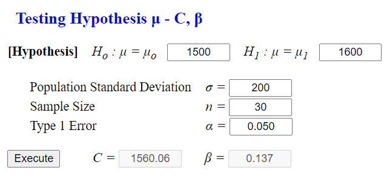
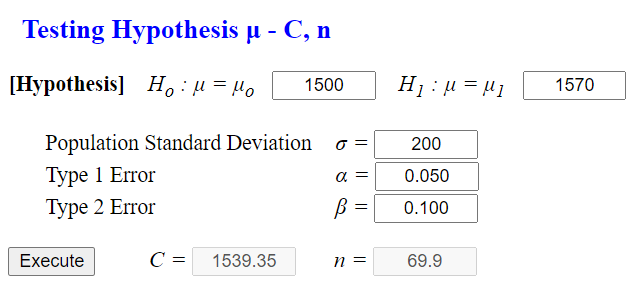

Chapter 7. Testing Hypothesis for Single Population Parameter
7.4 Testing Hypothesis with α and β simultaneously
[presentation] [video]
7.4.1 Type 2 Error and Power of a Test
Answer
The hypothesis in [Example 7.1.1] is \(\small H_0 : \mu = 1500, H_1 : \mu = 1600\), the population standard deviation is assumed σ = 200, the sample size is \(n\) = 30 and hence the decision rule is as follows if the significance level is 5%.
\( \small \qquad ‘\text{If } \overline X \lt 1500 + 1.645 \times \frac {200}{30} = 1560.06, \text{ reject } H_0,\text{ else accept } H_0’ \)
Hence the type 2 error which is the probability of '\(\small H_0\) is true when \(\small H_1\) is true’ can be calculated as follows:
\( \small \qquad \beta = P(\overline X \lt 1560.06 | H_1 \) is true)
\( \small \qquad \;\; = P(\frac {\overline X - 1600}{\frac{200}{\sqrt{30}} } < \frac {1560.06 - 1600}{\frac{200}{\sqrt{30}} } ) \)
\( \small \qquad \;\; = P( Z \lt -1.09 ) \)
\( \small \qquad \;\; = 0.137 \)
Select ‘Testing \( \mu - C, \beta \) ’ at 『eStatU』 menu. Enter \(\small \mu_0 = 1500 , \mu_1 = 1600, \sigma = 200, \alpha = 0.05, n = 30 \) in the input box window as <Figure 7.4.1> and click the [Execute] button. The result of the testing hypothesis, the critical value \(C\) and the probability of the type 2 error β, will be shown as in <Figure 7.4.2>.
|

<Figure 7.4.1> Testing hypothesis for μ with α using 『eStatU』
|

\(\qquad \small H_0 : \mu = 1500 ,\;\; H_1 : \mu = 1580\)
Answer
\(\qquad\)‘If \(\small \overline X \lt 1500 + 1.645 \times \frac {200}{30} = 1560.06\), reject \(\small H_0\), else accept \(\small H_0\)’
Hence the probability of type 2 error is as follows:
\(\qquad \small \beta = P(\overline X \lt 1560.06 | H_1 is true) \)
\(\qquad \small \;\;= P(\frac {\overline X - 1580}{\frac{200}{\sqrt{30}} } < \frac {1560.06 - 1580}{\frac{200}{\sqrt{30}} } ) \)
\(\qquad \small \;\;= P( Z \lt -0.546 ) = 0.283 \)
|
2) In order to calculate β using 『eStatU』 , enter \(\mu_1 = 1580\) in <Figure 7.4.1>
and click the [Execute] button.
|
|
Practice 7.4.1
Calculate the followings using 『eStatU』.
1) If \(H_0 : \mu = 50, H_1 : \mu = 52, n = 25, \sigma = 3, \alpha = 0.05, \) find \(\beta\).
2) If \(H_0 : \mu = 50, H_1 : \mu = 54, n = 25, \sigma = 3, \alpha = 0.01, \) find \(\beta\).
3) If \(H_0 : \mu = 50, H_1 : \mu = 56, n = 25, \sigma = 3, \alpha = 0.05, \) find \(\beta\).
|
Comparing [Example 7.4.1] and [Example 7.4.2], the probability of the type 2 error occurring when \(H_1 : \mu = 1600 \) is less than that of \(H_1 : \mu = 1580 \), so the ability to judge is greater. In other words, the closer the population mean of \(H_1 \) is to the population mean of \(H_0 \), the less discriminating ability it becomes.
Generally, the discriminating ability of two hypothesis is compared by using the following power of a test. $$ \text {Power = 1 - (probability of the type 2 error) = 1 - } \beta $$ A large power increases the discriminating ability of the hypothesis test.
The power of a test can be obtained for any \(\mu_1\) of the alternative hypothesis \(H_1 : \mu = \mu_1 \). It means that the power is a function over the value of \(\mu_1\) and it is called a power function.
A function of the probability that the null hypothesis is correct when the null hypothesis is true is called an operating characteristic function. $$ \text {Operatiing characteristic function = 1 - (probability of the type 1 error) = 1 - }\alpha $$
Answer
Although the alternative hypotheses are different, the decision rule is the same as follows:
\( \qquad \small ‘\text{If } \overline X \lt 1500 + 1.645 \times \frac {200}{30} = 1560.06, \text{ reject } H_0,\text{ else accept } H_0’\)
Hence if we calculate the probability of the type 2 error as [Example 7.4.2], the power of each test is as follows:
| Alternative Hypothesis | β | Power = 1 - β |
|---|---|---|
| 1) \(\small H_1 : \mu = 1500 \) 2) \(\small H_1 : \mu = 1510 \) 3) \(\small H_1 : \mu = 1520 \) 4) \(\small H_1 : \mu = 1530 \) 5) \(\small H_1 : \mu = 1540 \) 6) \(\small H_1 : \mu = 1550 \) 7) \(\small H_1 : \mu = 1560 \) 8) \(\small H_1 : \mu = 1570 \) 9) \(\small H_1 : \mu = 1580 \) 10) \(\small H_1 : \mu = 1590 \) 11) \(\small H_1 : \mu = 1600 \) 12) \(\small H_1 : \mu = 1610 \) |
0.95 0.91 0.86 0.79 0.71 0.61 0.50 0.39 0.29 0.21 0.14 0.09 |
0.05 0.09 0.14 0.21 0.29 0.39 0.50 0.61 0.71 0.79 0.86 0.91 |
The power function can be approximated by connecting points of (, 1 - ) in each test as <Figure 7.4.3>.

|
Practice 7.4.2
If \(\small H_0 : \mu = 50, n = 25, \sigma = 5, \alpha = 0.05 \), calculate the power of the following alternative hypothesis. By using this, approximate the power function.
1) \(\small H_1 : \mu = 51 \)
2) \(\small H_1 : \mu = 52 \)
3) \(\small H_1 : \mu = 53 \)
4) \(\small H_1 : \mu = 54 \)
5) \(\small H_1 : \mu = 55 \)
6) \(\small H_1 : \mu = 56 \)
|
7.4.2 Testing Hypothesis with α and β
Answer
Let \(n\) be the sample size and \(\small C\) be the critical value of a decision rule. The probability of the type 1 error α and the probability of the type 2 error β are defined as follows: $$ \small \begin{multline} \shoveleft \alpha = P(\overline X \gt C | H_0 \text{ is true } ) \\ \shoveleft \beta = P(\overline X \lt C | H_1 \text{ is true } ) \\ \end{multline} $$ If \(\small H_0\) is true, the sampling distribution of \(\small \overline X\) is \(\small N(1500, \frac{200^2}{n})\) and if \(\small H_1\) is true, the sampling distribution of \(\small \overline X\) is \(\small N(1570, \frac{200^2}{n})\). If α = 0.05 and β = 0.10, then \(z_{0.05}\) = 1.645 and \(z_{0.90}\) = -1.280. Hence \(n\) and \(\small C\) should satisfy both of the following equations and they can be calculated by solving the two system of equations. $$ \small \begin{multline} \shoveleft C = 1500 + 1.645 \times \frac{200}{\sqrt{n}} \\ \shoveleft C = 1570 - 1.280 \times \frac{200}{\sqrt{n}} \\ \end{multline} $$ The solution is \(n\) = 69.8, \(\small C\) = 1539.4. i.e., the sample size is 70 approximately and the decision rule is as follows: $$ \small \begin{multline} \shoveleft ‘\text{If } \overline X \gt 1539.4, \text { then reject } H_0, \text { else accept } H_0’ \end{multline} $$ Select ‘Testing μ - \(C, n\)’ at 『eStatU』 menu. Enter \(\mu_0 = 1500 ,\mu_1 = 1570 , \alpha = 0.05 \), \( \beta = 0.10 \) in the input box window as <Figure 7.4.4>.
|

<Figure 7.4.4> Testing hypothesis for with using 『eStatU』
|
If you click the [Execute] button, you will see the test result of 『eStatU』 as in <Figure 7.4.5>. The critical value and the sample size are calculated.

| Practice 7.4.3 If \( H_0 : \mu = 50 , H_1 : \mu = 52 , \sigma = 3 , \alpha = 0.05 , \beta = 0.10 \), find \(n, C\) using 『eStatU』. |
Multiple Choice Exercise
*** Choose one answer and click [Submit] button
7.11 What is the power of a test?
7.12 What is the operating characteristic probability?